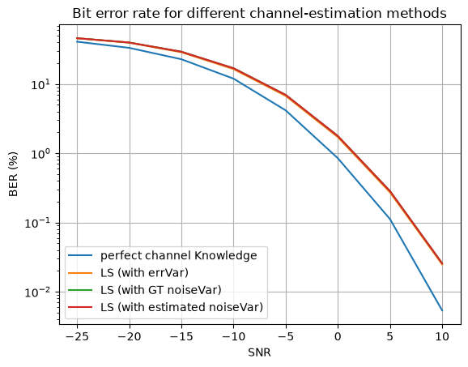
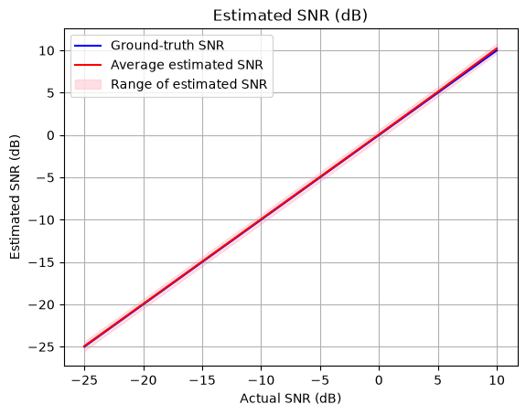
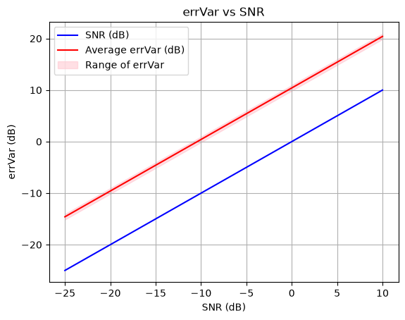

Channel/Noise Estimation
This notebook demonstrates an end-to-end pipeline for channel and noise estimation using the PDSCH class’s estimateChannel method.
The estimateChannel function estimates the effective channel between the PDSCH layers and the receive antennas using the DMRS resource elements. It also returns errVar, which is the variance of the effective residual uncertainty associated with the estimated channel. If the optional parameter estimateNoiseVar is set to True, the function also returns an estimated noise variance.
This notebook compares several channel- and noise-estimation methods and evaluates their corresponding bit error rates. It also compares the estimated SNR values with the ground-truth SNR values.
[1]:
import numpy as np
import time
import matplotlib.pyplot as plt
from neoradium import Carrier, PDSCH, CdlChannel, AntennaPanel, random
from neoradium.utils import toDb
[2]:
snrDbs = [-25, -20, -15, -10, -5, 0, 5, 10] # SNR values (in dB) for which we want to evaluate the model
freqDomain = True # Set to False to apply channel in the time domain
modulation = "16QAM" # Modulation scheme
carrier = Carrier(numRbs=24, spacing=30) # Create a carrier with 24 RBs and 30 kHz subcarrier spacing
bwp = carrier.curBwp # The only bandwidth part in the carrier
# Create a PDSCH object
pdsch = PDSCH(bwp, numLayers=2, modulation=modulation)
pdsch.setDMRS(configType=1, additionalPos=1) # DMRS configuration
numSlots = 500 # Total number of slots
results = {} # Dictionary to save the results
noiseEstimates = {}
errVars = {}
minMse, maxMse = 100, 0
for chanEstMethod in ["perfect channel Knowledge", "LS (with errVar)",
"LS (with GT noiseVar)", "LS (with estimated noiseVar)"]:
results[chanEstMethod] = {}
print("\nSimulating end-to-end for %s using %s in the %s domain"%
(modulation, chanEstMethod, "frequency" if freqDomain else "time"))
print("SNR(dB) Total Bits Bit Errors BER(%) time(Sec.)")
print("------- ---------- ---------- ------ ----------")
for snrDb in snrDbs:
if chanEstMethod=="LS (with estimated noiseVar)":
noiseEstimates[snrDb] = []
errVars[snrDb] = []
random.setSeed(123) # Make the results reproducible for each SNR
t0 = time.monotonic()
carrier.slotNo = 0
# Create a CdlChannel object
channel = CdlChannel(bwp, 'C', delaySpread=300, carrierFreq=4e9, dopplerShift=200,
txAntenna = AntennaPanel([2,4], polarization="x"), # 16 TX antennas
rxAntenna = AntennaPanel([1,2], polarization="x")) # 4 RX antennas
bitErrors = 0
totalBits = 0
for slotNo in range(numSlots):
pdsch.initGrid() # Create and initialize PDSCH's internal grid
numBits = pdsch.getBitCapacity() # Number of bits available in the resource grid
txBits = random.bits(numBits[0]) # Create random binary data
# Now populate the resource grid with coded data. This includes QAM modulation and resource mapping.
pdsch.setPdschData(txBits)
channelMatrix = channel.getChannelMatrix() # Get the channel matrix
precoder = pdsch.getPrecodingMatrix(channelMatrix) # Get the precoder matrix
txGrid = bwp.createGrid(len(channel.txAntenna)) # Create the transmitted resource grid
pdsch.precodeTo(txGrid, precoder) # Perform the precoding
if freqDomain:
rxGrid = txGrid.applyChannel(channelMatrix) # Apply the channel in the frequency domain
rxGrid = rxGrid.addNoise(snrDb=snrDb) # Add noise
else:
txWaveform = txGrid.ofdmModulate() # OFDM modulation
maxDelay = channel.getMaxDelay() # Get the max. channel delay
txWaveform = txWaveform.pad(maxDelay) # Pad with zeros
rxWaveform = channel.applyToSignal(txWaveform) # Apply channel in time domain
noisyRxWaveform = rxWaveform.addNoise(snrDb=snrDb, bwp=bwp) # Add noise
offset = channel.getTimingOffset() # Get timing info for synchronization
syncedWaveform = noisyRxWaveform.sync(offset) # Synchronization
rxGrid = syncedWaveform.ofdmDemodulate(bwp) # OFDM demodulation
if chanEstMethod == "perfect channel Knowledge":
estChannelMat = channel.getEffChannel(channelMatrix, precoder) # Perfect channel knowledge
eqGrid, llrScales = pdsch.equalize(rxGrid, estChannelMat) # Equalization
elif chanEstMethod == "LS (with errVar)":
estChannelMat, errVar = pdsch.estimateChannel(rxGrid) # LS channel estimation
eqGrid, llrScales = pdsch.equalize(rxGrid, estChannelMat, errVar) # Use errVar
elif chanEstMethod == "LS (with GT noiseVar)":
estChannelMat, errVar = pdsch.estimateChannel(rxGrid) # LS channel estimation
eqGrid, llrScales = pdsch.equalize(rxGrid, estChannelMat, rxGrid.noiseVar) # Use noiseVar
elif chanEstMethod == "LS (with estimated noiseVar)":
estChannelMat, errVar, estNoiseVar = pdsch.estimateChannel(rxGrid, estimateNoiseVar=True)
eqGrid, llrScales = pdsch.equalize(rxGrid, estChannelMat, estNoiseVar) # Use estimated noiseVar
noiseEstimates[snrDb] += [ estNoiseVar ]
errVars[snrDb] += [ errVar ]
rxBits = pdsch.getHardBits(eqGrid)[0] # Demodulation
bitErrors += np.abs(rxBits-txBits).sum() # Count the number of bit errors
totalBits += numBits[0]
print("\r %3d %8d %8d %6.2f %6.2f"%(snrDb, totalBits, bitErrors,
bitErrors*100/totalBits, time.monotonic()-t0), end='')
channel.goNext() # Prepare the channel model for the next slot
dt = time.monotonic()-t0 # Total time for this SNR
results[chanEstMethod][snrDb] = {"totalBits":totalBits,
"bitErrors":bitErrors,
"BER": bitErrors*100/totalBits,
"Time": dt,
"NoiseVar": rxGrid.noiseVar}
print("\r %3d %8d %8d %6.2f %6.2f"%(snrDb, totalBits, bitErrors,
bitErrors*100/totalBits, dt))
# Compare the results
for i,chanEstMethod in enumerate(["perfect channel Knowledge", "LS (with errVar)",
"LS (with GT noiseVar)", "LS (with estimated noiseVar)"]):
bers = [results[chanEstMethod][snrDb]["BER"] for snrDb in snrDbs]
plt.plot(snrDbs, bers, label=chanEstMethod)
plt.legend()
plt.title("Bit error rate for different channel-estimation methods");
plt.grid()
plt.xlabel("SNR")
plt.xticks(snrDbs)
plt.ylabel("BER (%)")
plt.yscale('log')
plt.show()
Simulating end-to-end for 16QAM using perfect channel Knowledge in the frequency domain
SNR(dB) Total Bits Bit Errors BER(%) time(Sec.)
------- ---------- ---------- ------ ----------
-25 14976000 6125696 40.90 35.73
-20 14976000 4988515 33.31 36.62
-15 14976000 3416458 22.81 36.86
-10 14976000 1790785 11.96 36.83
-5 14976000 623667 4.16 36.63
0 14976000 126831 0.85 36.10
5 14976000 16749 0.11 35.75
10 14976000 802 0.01 36.17
Simulating end-to-end for 16QAM using LS (with errVar) in the frequency domain
SNR(dB) Total Bits Bit Errors BER(%) time(Sec.)
------- ---------- ---------- ------ ----------
-25 14976000 6878156 45.93 37.10
-20 14976000 5920161 39.53 37.91
-15 14976000 4308707 28.77 38.18
-10 14976000 2460068 16.43 37.58
-5 14976000 1008402 6.73 37.01
0 14976000 255569 1.71 36.32
5 14976000 40725 0.27 36.38
10 14976000 3706 0.02 36.42
Simulating end-to-end for 16QAM using LS (with GT noiseVar) in the frequency domain
SNR(dB) Total Bits Bit Errors BER(%) time(Sec.)
------- ---------- ---------- ------ ----------
-25 14976000 6879454 45.94 36.46
-20 14976000 5960180 39.80 36.44
-15 14976000 4391364 29.32 36.73
-10 14976000 2535724 16.93 36.17
-5 14976000 1044894 6.98 36.69
0 14976000 266126 1.78 36.01
5 14976000 42568 0.28 36.12
10 14976000 3848 0.03 36.48
Simulating end-to-end for 16QAM using LS (with estimated noiseVar) in the frequency domain
SNR(dB) Total Bits Bit Errors BER(%) time(Sec.)
------- ---------- ---------- ------ ----------
-25 14976000 6878526 45.93 36.82
-20 14976000 5957570 39.78 37.31
-15 14976000 4387601 29.30 36.95
-10 14976000 2532918 16.91 36.63
-5 14976000 1043822 6.97 37.07
0 14976000 265940 1.78 36.25
5 14976000 42510 0.28 36.61
10 14976000 3838 0.03 36.86

[3]:
# Convert all estimated noise variances to SNR values and compare them with the ground-truth SNR values
nr = channel.rxAntenna.numEl
meanEstSnrDb, minEstSnrDb, maxEstSnrDb = [], [], []
for snrDb in snrDbs:
estSnrs = toDb(1/(np.array(noiseEstimates[snrDb])*nr)) # Estimated SNR in dB
meanEstSnrDb += [ estSnrs.mean() ]
minEstSnrDb += [ estSnrs.min() ]
maxEstSnrDb += [ estSnrs.max() ]
plt.plot(snrDbs, snrDbs, color='blue', markersize=1, label=f"Ground-truth SNR")
plt.plot(snrDbs, meanEstSnrDb, color='red', markersize=1, label=f"Average estimated SNR")
plt.fill_between(snrDbs, minEstSnrDb, maxEstSnrDb, color='pink', alpha=.5, label='Range of estimated SNR')
plt.title('Estimated SNR (dB)')
plt.xlabel('Actual SNR (dB)')
plt.ylabel('Estimated SNR (dB)')
plt.grid()
plt.legend()
[3]:
<matplotlib.legend.Legend at 0x118b28050>

[4]:
# Plot the residual error variance (errVar) values vs ground-truth SNR
nr = channel.rxAntenna.numEl
meanErrVarDb, minErrVarDb, maxErrVarDb = [], [], []
for snrDb in snrDbs:
errVarDb = toDb(1/(np.array(errVars[snrDb])*nr)) # Estimated SNR in dB
meanErrVarDb += [ errVarDb.mean() ]
minErrVarDb += [ errVarDb.min() ]
maxErrVarDb += [ errVarDb.max() ]
plt.plot(snrDbs, snrDbs, color='blue', markersize=1, label=f"SNR (dB)")
plt.plot(snrDbs, meanErrVarDb, color='red', markersize=1, label=f"Average errVar (dB)")
plt.fill_between(snrDbs, minErrVarDb, maxErrVarDb, color='pink', alpha=.5, label='Range of errVar')
plt.title('errVar vs SNR')
plt.xlabel('SNR (dB)')
plt.ylabel('errVar (dB)')
plt.grid()
plt.legend()
[4]:
<matplotlib.legend.Legend at 0x11900e870>

[ ]: